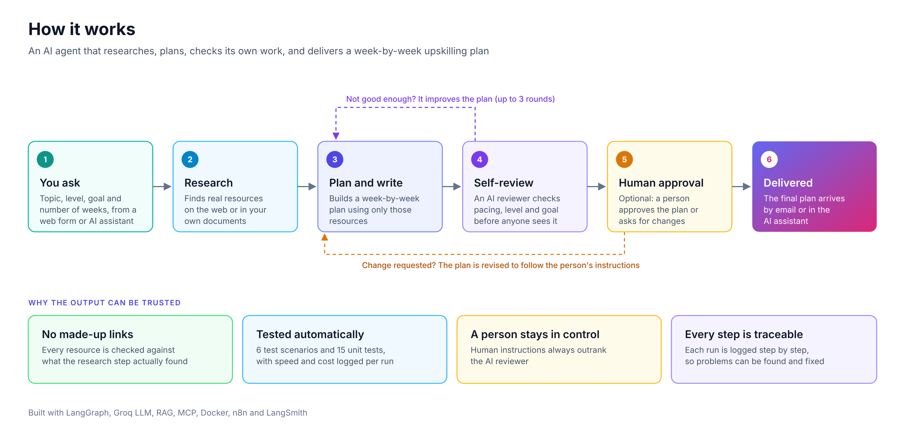
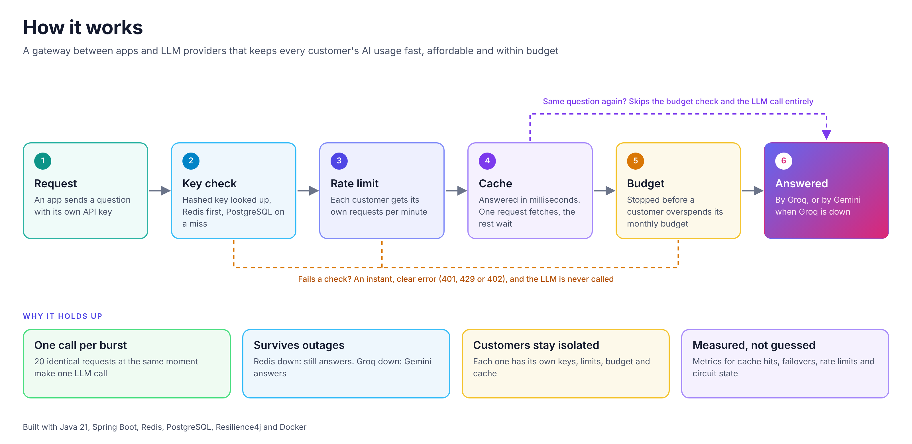
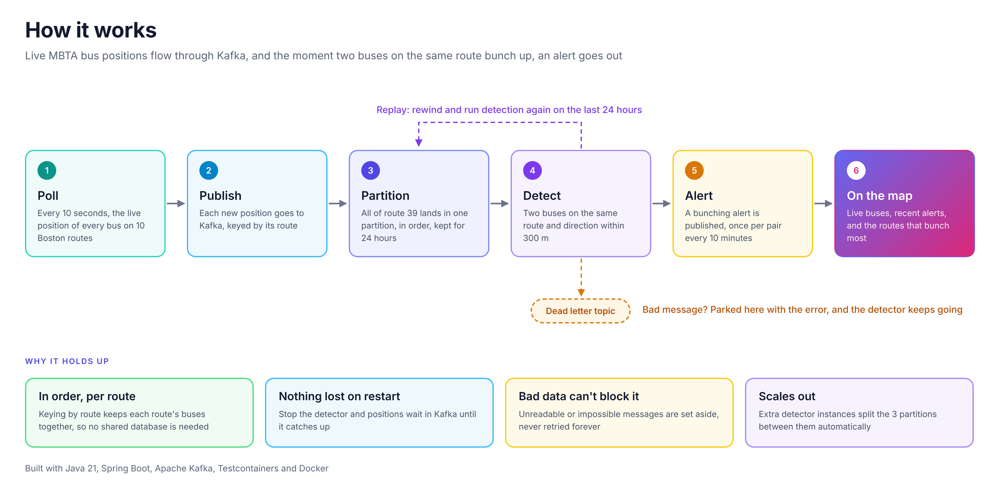

Software Engineer, Backend and AI Systems
I'm a software engineer with 7+ years building services and web apps in Java, Spring Boot and Angular, including as a technical lead at Verizon.
For the past year I've been building AI agent systems in Python, with a focus on the parts that make them trustworthy: evaluation, human review, and clear failure handling.

An AI agent that builds week-by-week upskilling plans, reviews its own work, and lets a person approve or push back before anything is delivered.

A gateway that sits between apps and LLM providers, so each customer's AI usage stays fast, affordable and within budget, even when a provider goes down.

You wait 20 minutes for the bus, then two arrive together. This system watches live Boston (MBTA) bus data and flags the moment buses on the same route bunch up.
At Verizon I built a new backend microservice and its Angular front end for a customer ordering application. Before that, at Orange Business Services, I handled production issues, on-call support and root-cause analysis, and delivered technical projects on my own.
I hold an MS in Computer Science from Northeastern and an MS in IT Project Management from New England College.
I'm looking for AI Engineer and Software Engineer roles.